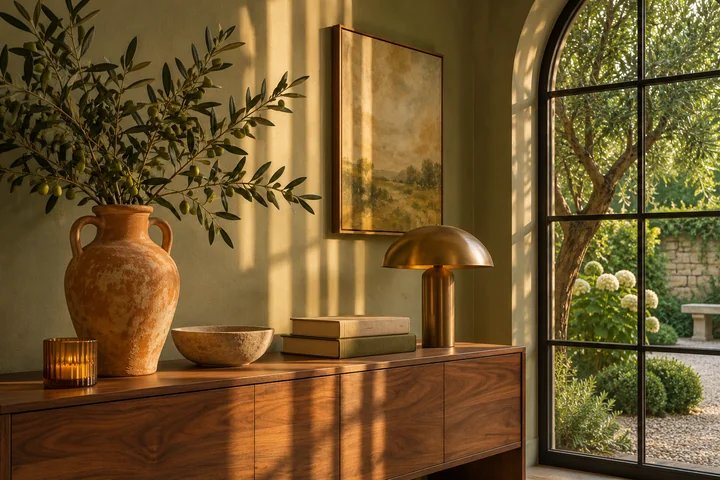

O que fica
à vista?
A luz e os contornos mudam conforme o acabamento. Compare três referências sobre a mesma imagem.

Cena de referência
Fosco
Comparação visual ilustrativa. O resultado real depende da amostra, da iluminação e da distância.
Fosco
Suaviza os contornos de objetos do outro lado. Observe como a imagem fica menos definida.
O que observar de perto
- O que precisa ficar visível?
- Pense em circulação, luz natural e o que você quer ver do outro lado.
- Como a luz muda ao longo do dia?
- Considere uma amostra perto do local, em horários diferentes, antes de escolher.
Da amostra à conversa.
Use a comparação como ponto de partida e indique onde você pretende colocar a peça.
Montar pedido
Resumo do pedido
- Protocolo de teste
- Peça
- Medidas aproximadas
- Acabamento
- Etapa
Em um atendimento real, a equipe conferiria o vão e as condições de instalação antes de preparar uma proposta.